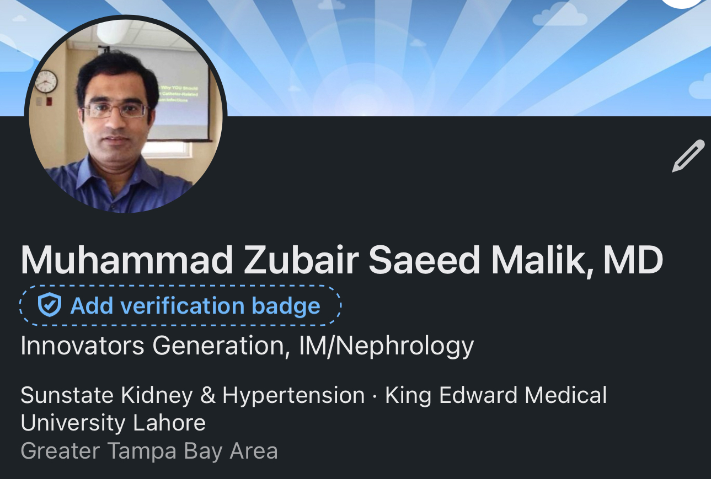

Dr. Zubair Malik, MD, FASN
Nephrologist • Internist • Clinician Educator
Guideline-anchored kidney and blood pressure care, CKD risk reduction, dialysis decision support, and clinician education.
Clinical insight, made practical.
Nephrologist & Internist focused on practical, guideline-anchored care, community health, and clinician education. Creator of digital tools that make complex renal decisions simpler at the bedside.
Interests: CKD risk reduction, dialysis decision support, electrolyte disorders, clinical AI.

Dr. Zubair Malik — MD, FASN, FACP • Nephrology & Internal Medicine
Focused expertise when it matters.
Focused expertise in kidney disease and complex internal medicine.
Nephrology Consult
- CKD staging, risk reduction, anemia
- CKD-MBD, HTN in CKD
- Shared decision-making
Internal Medicine Consult
- Multi-morbid patients
- Diagnostic clarification
- Care plans aligned with guidelines
Sunstate Kidney & Hypertension
- Patient-focused kidney & BP services
- Ask-a-question AI assistant
- Appointment requests
Clinical tools for real healthcare workflows.
Medical web applications used by healthcare teams, plus a clinician-focused nephrology AI tool.
AI-Dr. Malik Clinical AI
Nephrology and internal medicine copilot for guideline-anchored plans, renal dosing questions, and electrolyte guidance.
Open Clinical AI ToolDoctor Schedule Manager
AI-powered medical staff scheduling with availability insights and dependable coverage.
Open Web App Google PlayDoctor On Call
Structured on-call rotations, clear handoffs, and team-wide coverage visibility.
Open Web App Google PlayER Wait Time
Live patient wait-time clarity with AI chat for common emergency-department questions.
Open Web App Google PlayClinical AI for nephrology questions.
Ask clinical questions, draft plans, and explore guideline-cited answers.
By using the AI, you agree to the Terms & Privacy. Educational use only.
Evidence-first care and guidance.
Evidence-first care in Nephrology & Internal Medicine.
Clinical consultations, education, and a safe AI copilot trained on KDIGO/KDOQI & major guidelines—anchored to how Dr. Malik practices.
Educational tool; not a substitute for in-person medical care. In emergencies, call local services.